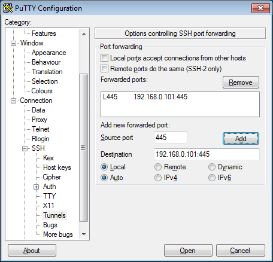

When SSH is your poor man's VPN
Imagine that you need to access a Windows share from your Windows machine and you have a Linux box to help you. Then you just need to forward port 445 from remote. But there are few caveats.
First, you need to disable built-in SMB server on the Windows machine you're connecting from:
C:\>sc config "LanmanServer" start= disabledand restart the computer. Because otherwise you won't be able to bind to port 445 on the same machine, and Windows doesn't allow you to use any other port to connect to remote file shares.
You need a working SSH connection from Windows machine to the Linux box which can connect to your Windows share. How to set this up is outside of scope of this article, but reverse-port-forwarding via a cheap VPS helped me.
Then, you set up a local port forward like shown on this picture.

Then, open this connection and open
\\192.168.0.1\in file manager (Windows Explorer).As an extra bonus, you might want to strengthen your setup:
Use a dedicated user for port forward, who is not allowed to login (has
/bin/falseas shell in/etc/passwd)Forbid this user to run any commands (use
ForceCommandin/etc/ssh/sshd_configfile inMatch User {username}section)Use a password on the keyfile